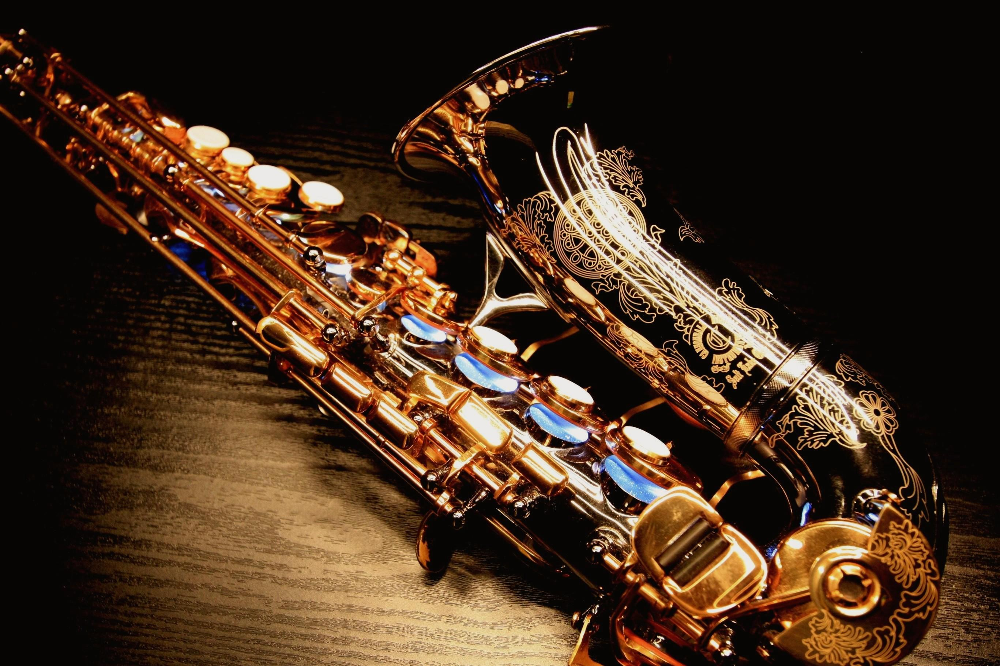
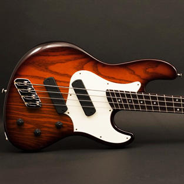
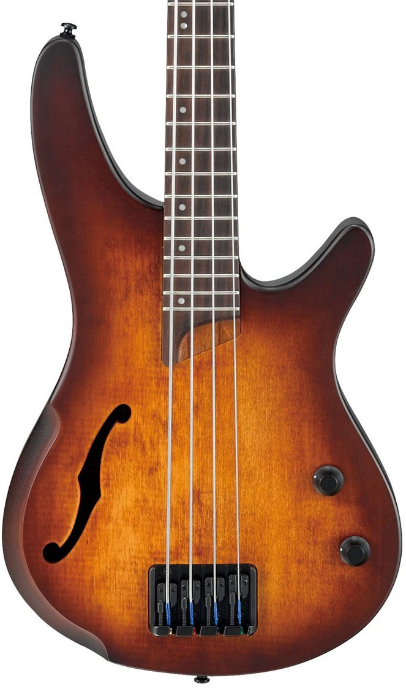

Here is a list of my most favourite things in my world
Carol
Tasha
Keith
Steph
Brian
Chapati
pizza
Mokimo
Well-cooked Pork
Most friuts not avocado
i also like music and animations too!!
  
Above is my favorite instruments.